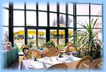
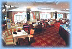
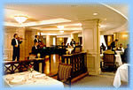
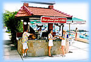
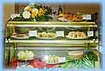
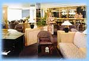

Отель "Рэдиссон САС Лазурная"
Это целый мир, где можно не только снять комфортный номер, но и великолепно отдохнуть.
Бассейны или пляж с водными развлечениями, сауны, тренажерный зал или теннисные корты позволят Вам получить заряд бодрости. Часы отдыха приятно удивят Вас бесконечными возможностями выбора. А в довершение - те минуты, когда можно будет расслабиться с друзьями и близкими в баре или кафе, где единственным затруднением для Вас будет выбор из предложенного разнообразия. В каждом ресторане и ночном клубе отеля Вас ожидает программа на любой вкус с участием звезд эстрады, феерическими шоу и кулинарными вдохновениями от нашего шеф-повара - искушением для любого гурмана.
Ресторан "Морской Бриз"
Свежесть средиземноморья в уютном ресторане с открытой террасой с чудесным видом на бассейн, парк и море. Средиземноморская кухня предлагает изысканные блюда из морепродуктов - эскалоп из осетрины "Нисуаз", тигровые креветки по-правансальски, мяса и птицы - Цыпленок с пряностями в арахисовом соусе, сэндвичи, десерты от шеф-кондитера для сладкоежек - ванильное пирожное "Тысяча лепестков", французский яблочный пирог и еще множество других лакомств.
По вечерам для Вас приятная музыка в живом исполнении лучших сочинских виртуозов.
Ресторан вмещает:
- 80 чел. - обслуживание по меню - внутренний зал
- 100 чел. - банкет - внутренний зал
- 140 чел. - коктейль - внутренний зал
- 150 - обслуживание по меню - зал с террасой
- 170 - банкет - зал с террасой
- 300 - коктейль - зал с террасой
Ресторан "Русская Ривьера"
Атмосфера роскоши и чувственности начала прошлого века в ресторане "РУССКАЯ РИВЬЕРА", светлый и просторный зал идеален для банкетов и шведского стола. Тематические шведские столы - русский, интернациональный, итальянский, восточный, средиземноморский, рыбный. Меню с интернациональными блюдами.
Ресторан вмещает:
- 250 чел. - обслуживание по меню
- 350 - банкет
- 550 - коктейль
Ресторан "Петр Великий"
Самый элегантный вечерний ресторан Отеля. Изысканные интерьеры, превосходная кухня. Незабываемые вечера под звуки нестареющих мелодий в исполнении джазового трио. Открыт: среда-воскресенье, с 7 утра до 1 ночи.
Ресторан "Фрегат"
 Всего в двадцати шагах от морской волны - потрясающий выбор салатов, блюда из свежевыловленной радужной форели и раков, креветки на гриле, шашлыки и десерты. Открыт: ежедневно с 11 утра до 10 вечера.
Кафе-мороженое "Сладости"
 Устоять невозможно! Восхитительные десерты, пирожные и торты. Ароматы кофе и разнообразие чая. Открыт: ежедневно с 10 утра до 7 вечера.
Лобби-бар
 Богатый выбор вин, первоклассных алкогольных напитков и коктейлей со всего мира. Открыт: ежедневно с 12 дня до 3 ночи.